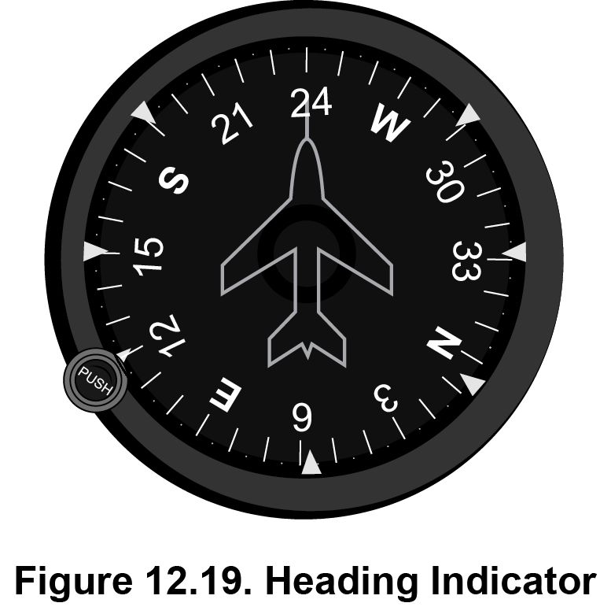

TWELVE: Aviation Information
This Aviation section tests knowledge of topics related to aircraft operations, including the physics of flight, aircraft performance and structures, airfield and airspace operations, flight controls, and instrument comprehension, as well as a brief history of aviation.
The Physics of Flight
A successful aircraft flight is the result of an understanding of the scientific theories and principles involved in moving 300 to 400 tons of machinery through the skies at speeds ranging from 100 to 750 miles per hour (mph). Newton’s laws of motion, Newton’s law of universal gravitation, and Bernoulli’s principle, along with weight, balance, the factors that constitute the flight envelope, and the axes of an aircraft all play a part in aeronautics.
Newton’s Laws of Motion
Isaac Newton’s three laws of motion detail the fundamental mechanics of motion. The first law focuses on inertia, the second law defines when an accelerated motion is applied to a force, and the third law explains the relationship of motion between any two objects.
Newton’s first law of motion, also called the law of inertia, states that an object at rest will stay at rest, and an object in motion will remain in motion at a constant velocity unless acted upon by an unbalanced force. The unbalanced force may be any force, such as gravity or friction. For example, a ball sitting on the floor will remain still unless a force is exerted upon it—a kick from a foot, a push from a hand, or a strong wind moving it.
Helpful Hint: Inertia is the tendency of an object to resist changes in velocity whether the object is in motion or motionless.
There are four types of friction:
- Sliding, or kinetic, friction results when the surface of one object slides along the surface of another object. This is commonly seen when pushing a solid object, such as a plate or book along a tabletop.
- Fluid friction is the resistance on an object when it is moved through either air (gas) or water (liquid). This is witnessed when a fish moves through water, a bird flies through air, or an airplane creates drag.
- Rolling friction is similar to sliding friction except rolling friction occurs when an object rolls—instead of slides—across a surface. This is observed when a bowling ball rolls down an alley. The ball, once pushed, moves at a particular rate, or velocity, while also resisting that movement due to qualities of the surface on which it is rolling.
- Static friction is what keeps an object at rest when that object is acted upon by an external force. A trash can initially remains in place due to static friction when an attempt is made to drag it across a floor.
As an example of the four frictions, if a car is traveling at 40 mph, the passengers and contents inside the car are also moving at a rate of 40 mph, until the driver applies the brakes to avoid a collision with a tree. If the passengers are not restrained by seat belts, the full effects of a collision pass from the vehicle to them as well as to the contents of the vehicle. The tires of the vehicle rolling along the road overcome rolling friction. The vehicle counteracts fluid friction from any oncoming wind. When the driver applies the brakes, the wheels may stop rolling but the car skids along the surface of the road, exemplifying sliding friction. At the moment of the car’s impact with the tree, objects inside the vehicle overcome static friction as they scatter.
Newton’s second law of motion states that when a body is acted upon by a constant force, its resulting acceleration is inversely proportional to the mass of the body and directly proportional to the applied force.
The net force of an object is equal to the product of the mass of the object and the acceleration. The equation to determine the amount of force is F = ma. One unit of force (F) is defined as Newtons (N). Mass is weighed in kilograms (kg) and acceleration is measured in meters per second per second (m/s/s or m/s2).
Newton’s third law of motion states that if two objects interact, the force exerted by the first object on the second object is equal in magnitude and opposite in direction to the force exerted by the second object on the first object.
For example, the force exerted by a tennis racket hitting a tennis ball is equal in magnitude and opposite the force exerted by the ball on the tennis racket. Likewise, during a launch of a rocket into space, the gases expelled under the rocket exert enough force to cause the rocket to lift off the launchpad in the opposite direction.
Example
1. Consider an object acted on by only two forces, as shown below. If the magnitudes of F1 and F2 are equal, which of the following statements is true?
(A) The velocity of the object must be zero.
(B) The velocity of the object must be constant.
(C) The velocity of the object must be increasing.
(D) The velocity of the object must be decreasing.
(E) The object must remain stationary.
Newton’s Law of Universal Gravitation
Isaac Newton’s law of universal gravitation states that a particle attracts every other particle in the universe with a force that is directly proportional to the product of their masses and inversely proportional to the square of the distance between them. This law helps scientists understand the effects of gravity on aircraft during flight, because the gravitational force between two objects increases with mass and decreases with distance.
Helpful Hint: Equation: Fg = G(m1m2/d 2)
F: unit of force (N) of gravity
G: gravitational constant value (e.g., 6.673 × 10−11 m3 kg−1 s−2)
m1: mass of object 1
m2: mass of object 2
d: distance in meters between the centers of both objects
Example
2. Consider two objects a distance d apart. According to Newton’s law of universal gravitation, what happens to the force between the two objects if the distance (d) is increased by a factor of 4?
(A) The force decreases by a factor of 4.
(B) The force increases by a factor of 4.
(C) The force increases by a factor of 2.
(D) The force decreases by a factor of 16.
(E) The force decreases by a factor of 32.
Bernoulli’s Principle
Mathematician and physicist Daniel Bernoulli devised the following principle in relation to hydrodynamics: within a horizontal flow of fluid, points of faster fluid speed will experience less pressure than points of slower fluid speed.
This principle is imperative when analyzing the flow of hydraulic fluids through an aircraft. An accurate pressure flow of fluids is essential to the intricate operation of braking and flight control systems.
Bernoulli’s principle also applies to airflow during the basic phases of flight: takeoff, in-flight, and landing. The curvature of an airplane wing causes air to pass faster over the top of the wing (creating a lower pressure area) than under the wing (a higher pressure area). During takeoff, this produces the lift an airplane requires. During flight and when landing, the aircraft must compensate for and utilize all four forces of flight: weight (the force of gravity pushing the aircraft down), lift (the force required to raise the aircraft), thrust (the force applied in order to move the aircraft forward), and drag (the force that slows the aircraft down in preparation for landing).
Helpful Hint: Drag develops from friction and changes in air pressure, which cause an aircraft to slow down. Inputs to the flight controls affect weight, lift, thrust, and drag, resulting in the aircraft speeding up, slowing down, and/or gaining or losing altitude.
Example
3. Which statement is true about fluid pressure according to Bernoulli’s principle?
(A) Fluids moving at a point in a horizontal pipe at a higher speed have lower pressure than fluids moving at a point at a slower speed.
(B) Fluids moving at a point in a horizontal pipe at a higher speed have higher pressure than fluids moving at a point at a slower speed.
(C) Fluids moving along a vertical pipe at a slower speed have higher pressure than fluids moving along at a higher speed.
(D) Horizontal and vertical pipe fluid pressure levels do not change.
(E) The fluid pressure at constricting points along a pipe does not differ from the fluid pressure at free-flowing areas of that pipe.
Aircraft Weight and Balance
The calculation of an aircraft’s weight and balance must be identified during preflight. It is important that the combination of passengers, baggage, usable and unusable fuel or fluids, and cargo are within established weight and balance limits. A predetermined empty weight center of gravity (EWCG) is provided by the aircraft’s manufacturer along with a weight limit, which is specific to each aircraft.
Helpful Hint: Usable fuel is the total amount of fuel expected for taxi/ground movements, flight time, and reserve fuel requirements. Unusable fuel is the amount of fuel that cannot get to the engine.
The following are acronyms of other weight specifications:
- Manufacturer’s empty weight (MEW) is the total weight of the aircraft as it was built. This includes systems and components required for the aircraft to operate. It does not include the weight of baggage, passengers, or either usable or unusable fuel or fluids.
- Operating empty weight (OEW) is the MEW plus the weight of the crew, fluids, unusable fuel, and the equipment required for flight. It does not include baggage, passengers, or usable fuel.
- All-up weight (AUW), or aircraft gross weight (AGW), is the total aircraft weight at any given moment during a flight. The AUW decreases as fuel and fluids are consumed during the operation of the flight.
- Maximum landing weight (MLW) is an aircraft’s weight limit for landing. Exceeding this weight increases stress on the landing gear and may affect the distance required for a safe landing.
- Maximum zero fuel weight (MZFW) is the permissible weight of an aircraft with its contents and includes unusable fuel. The total MZFW excludes the weight of usable fuel on board and any consumable fluids.
- Maximum takeoff weight (MTOW) is an aircraft’s weight limit for takeoff. Exceeding this limit increases the power required for takeoff, lengthens the runway distance needed for a successful lift off, and places excess stress on the aircraft structure.
- Maximum ramp weight (MRW) is the weight limit for an aircraft to taxi or be towed on the ground.
Helpful Hint: Takeoff weight is determined by totaling the OEW, the cargo, the passengers, the baggage, and the taxi, flight, and reserve fuel requirements.
Example
4. Why is it important for an airplane not to exceed the MLW limit?
(A) All-up weight is calculated correctly.
(B) Most airplanes do not have to consider MLW.
(C) Undue stress may be placed on the landing gear system while landing.
(D) The airplane may not have enough fuel for the scheduled flight.
(E) The airplane can land on any runway length.
The Flight Envelope
The flight envelope encompasses the limits of speed, altitude, and angle of attack required by any aircraft to maintain a stable flight. An incorrect combination of these factors may result in a stall, during which the aircraft experiences a decrease in lift and a reduction in airspeed.
The angle of attack (AOA) is the angle between the direction of the airflow against the wing and the chord, an imaginary reference line that extends from the leading edge to the trailing edge of the wing.
An aircraft’s airfoil section (wing) is designed for maximum lift and fuel efficiency. An aircraft wing is curved along its front, leading edge, which creates low pressure above and high pressure below as air passes by the wing. As air passes over the end of the wing, or over the end of a helicopter rotor blade, it changes direction, a deflection called downwash. This deflection of air downward helps produce lift. This is clearly visible when a helicopter hovers above water. The air deflected off the rotor blades accelerates downward, causing outward ripples in the water under the helicopter.
The trailing edge of a wing has two control parts—ailerons and flaps—which extend outward and in opposite directions to aid the aircraft in rolling. The ailerons are located from the midpoint of the trailing edge of the wing to the wing’s tip. The flaps are located from the fuselage (main cabin body) to about the midpoint of the wing. Ailerons and flaps are in a closed position (flush against the wing’s surface) during cruising altitude.
To land, the pilot first creates drag to slow the aircraft. Spoilers are extended upward to help reduce airspeed. As the pilot approaches the runway, the wing flaps are progressively extended too. Once the aircraft is on the ground, raising the spoilers assists in slowing the airplane while the pilot also brakes. The following figure illustrates the positions of the flaps during takeoff, flight, and landing.
Drag is air resistance experienced during flight:
- Parasite drag is just that—any “parasite” on the structure of the aircraft: low air pressure in the tires, skin friction, or anything that increases turbulence on the aircraft. Skin friction refers to any rough spot on the skin of the aircraft structure. This, along with rivet heads that may project above the skin, causes resistance to the air current flowing across the wing.
- Profile drag is produced mainly by the shape of the aircraft. A smaller, slimmer aircraft reduces profile drag.
- Induced drag is when, at the back of the wing, air flowing rapidly across the top meets air flowing more slowly underneath, creating a vortex. This type of drag depends on the performance of the aircraft. When lift, airspeed, and AOA increase, induced drag automatically increases too.
Examples
5. What is an example of induced drag?
(A) a decrease in airspeed
(B) a decrease in AOA
(C) a decrease in lift
(D) an increase in AOA
(E) the landing gear system set in the up position
6. When an airplane increases its lift, which statement is true about the air pressure flowing above and below its wings?
(A) Air pressure is equal above and below the wings since the wings split the air evenly.
(B) Air pressure is higher above the wings and lower below the wings.
(C) Air pressure is lower above the wings and higher below the wings.
(D) Air pressure causes the trailing edges of the wings to extend outward.
(E) Both B and D are true.
The Axes of an Aircraft
Aircraft fly on a combination of three axes: longitudinal, lateral, and vertical. The longitudinal axis (roll) runs lengthwise from the nose (front) of the aircraft to the tail (rear) of the aircraft; the lateral axis (pitch) runs wingtip to wingtip; and the vertical axis (yaw) runs perpendicular to the wings at the center of the aircraft.
Controlling the axes of the aircraft is necessary to keep the aircraft in trim, its desired position. Roll along the aircraft’s longitudinal axis is controlled by an adjustment of the ailerons, located at the trailing edges of the wings. Pitch—the lateral angle of ascent or descent—is controlled by the elevators, located in the rear portion of the horizontal tail assembly. Yaw is controlled by the rudder, located in the rear portion of the vertical tail assembly; movement of the rudder causes the nose of the aircraft to move from side to side.
Example
7. Which components increase the pitch of an airplane?
(A) the ailerons and elevators along the longitudinal axis
(B) the ailerons and rudder along the vertical axis
(C) the elevators along the lateral axis
(D) the elevators along the longitudinal axis
(E) the rudder along the longitudinal axis
The Atmosphere
Atmospheric pressure is an extreme concern for a pilot when flying. Air weighs approximately 14.7 pounds per square inch (psi), and flight controls are calibrated for a standard atmosphere. Humidity and low air density levels reduce an aircraft’s capability for power, thrust, and lift. When the intake engines receive less air, the propellers are less efficient, and thin air applies less force on the wings, resulting in less than maximum lift.
Altitude, pressure, temperature, and humidity all affect the performance of an aircraft. The pressure altimeter in the cockpit is automatically calibrated for 29.92 inches of mercury (Hg). A pilot resets the pressure altitude indicator after departing an airfield to ensure the correct pressure altitude of the aircraft is displayed for the destination airfield (if it is different from the departure airfield). If this is not done, the aircraft may be at a lower altitude than what the altimeter displays.
All aircraft perform more efficiently in colder temperatures because the air is denser than when the air is warm. However, if the temperature drops too low, de-icing of the wings may be required during preflight procedures, extending the time required to complete preflight checks.
Example
8. How does air density affect the performance of an airplane?
(A) Low air density and humidity increase engine performance.
(B) High air density decreases engine performance.
(C) High air density increases engine performance.
(D) Low temperatures and low air density increase engine performance.
(E) Temperature and air density have no effect on engine performance.
Fixed-Wing Aircraft Structure
The Fuselage
The fuselage of an aircraft is the main section that holds the crew, passengers, and cargo. The wings, tail, engines, and landing gear attach to the fuselage, so this structure must be extremely strong to withstand stresses while minimizing weight. The fuselage also functions in the stabilization of an aircraft during flight.
The two main types of aircraft structures are truss and monocoque. A truss structure consists of welded steel-tubing longerons separated by diagonal members to endure the loads placed upon the aircraft.
A monocoque structure consists of a thin sheet-aluminum alloy curved to fit the shell of the fuselage. This metal skin is designed to withstand the stress of loads and minimize the total weight of the aircraft.
Example
9. What considerations do aircraft manufacturers address when selecting materials for a fuselage?
(A) a large enough area to hold the fuel tanks under the fuselage
(B) a non-bending material to withstand stress while flying
(C) a strong plastic framing that does not break easily
(D) the weight and strength of a material
(E) both C and D
The Wings
Several designs of wings are in use in aircraft. Wings may be attached to the bottom of the fuselage (what’s called a low wing), to the middle of the fuselage (a mid wing), or on top of the fuselage (a high wing). If no external braces are required, the wing is of a cantilever design. Some smaller fixed-wing aircraft are made with a semi-cantilever design, meaning external braces are attached to the wings. An aircraft with two levels of wings (one above the other) is called a biplane.
Wings also may be dihedral or anhedral to assist with stabilization. Note the angle of the wings in Figure 12.8.
The wings of an aircraft enable lift; the characteristics of the airfoil determine the lift capabilities.
The chord, touched on earlier, is the imaginary line in an airfoil; it establishes a baseline for the amount of camber and width required of the wing along its wingspan (the distance from one wingtip to the other wingtip). When the measurements of the chord line and the camber line differ greatly, the curvature of the wing will provide more lift.
Thickness is a percentage of the wing chord; it typically ranges from 6.5 to 13.5 percent.
The camber line is the amount of curvature of the wing. This additional imaginary line runs halfway between the upper and lower surfaces of the wing.
There are four types of wing planforms:
- The rectangular is the simplest type, highly inefficient, and typically used for light general aviation.
- The elliptical is the most efficient style, with the lowest possible induced drag.
- The tapered is a cross between a rectangular and an elliptical, providing better lift distribution and moderate efficiency. Aircraft with these wings have a wide range of speeds.
- The swept is tapered back to reduce drag. This category includes slightly swept, moderately swept, and sharply swept types. The disadvantages of the swept wing planform include its tendency to twist under stress. The delta wing, found on supersonic aircraft, is a highly swept triangular type that is very strong and has the ability to hold a large volume of fuel. Unlike the more standard swept wings, though, the delta has a high incidence of induced drag.
Example
10. Complete the following sentence with the term that establishes the size of the wing and the amount of camber an aircraft requires:
The amount of lift generated is dependent on the difference between the camber line and the ______________.
(A) anhedral
(B) wingspan
(C) chord line
(D) dihedral
(E) swept edge
The Powerplant
An aircraft’s powerplant encompasses the engines and propellers as well as the induction, exhaust, electrical, cooling, lubrication, and fuel systems.
In accordance with Newton’s third law of motion, an aircraft must generate enough thrust to create enough lift to overcome the drag produced during flight. Thrust is accomplished by converting an exploding gas-air mixture into mechanical energy in an engine. In modern turbofan engines, this mechanical energy turns the fan to produce thrust, much the same as a propeller on a smaller aircraft. The fan or propeller has an airfoil shape which produces “left” in the forward direction, referred to as thrust. Typically, aircraft with a cruising speed not exceeding 250 mph use a reciprocating engine. Larger, more powerful aircraft use a gas turbine engine. Aircraft traveling at high altitudes (above 30,000 feet) use a turbo-supercharged reciprocating engine. Aircraft operating at Mach 1 or higher use a turbojet engine; the afterburner on this engine enhances the power to reach such high speeds.
All engines must also meet certain requirements for fuel efficiency. During takeoff, engines operate at maximum performance. The level of power is cut back during the climb and then reduced to a fuel-efficient level when the aircraft levels off at cruising speed.
Helpful Hint: Thrust Horsepower equation: thp = (thrust × aircraft speed in mph)/375 pph
thp: thrust horsepower
Aircraft speed: in miles per hour (mph)
pph: pounds per hour
There are a few types of propellers. The fixed pitch propeller is set by the manufacturer. The variable pitch propeller allows the pilot to adjust the blade pitch during flight. A pusher propeller is installed on the rear of an aircraft and faces to the rear; the thrust created from its rotation pushes instead of pulls the aircraft, contrary to the fixed and variable pitch propellers. The pitch of any style of propeller affects the way it cuts through the air, producing air mass.
Example
11. If an engine produces 3500 pounds of thrust and travels at 500 mph, what is the thp?
(A) 3500 thp
(B) 3550.75 thp
(C) 4000 thp
(D) 4666.67 thp
(E) 7500.25 thp
The Landing Gear
The landing gear must support the weight of an aircraft during takeoff, landing, and ground maneuvering. The styles of landing gear include the following: tail wheel, tandem, and tricycle landing gear.
When an aircraft’s main landing gear is positioned forward of its center of gravity, the use of a tail wheel system is required. This type of landing gear consists of a third wheel assembly, which is beneficial for landing on non-paved runways. Improvements to the assembly allow for steering the tail wheel through the rudder.
Tandem landing gear has both main and tail portions mounted along the longitudinal axis of the aircraft. This style supports the use of very flexible wings.
Tricycle landing gear includes a main gear and a nose gear, which together support increased braking ability, higher landing speeds, and better visibility for ground operations. The nose gear is steered through either mechanical linkage or, in larger aircraft, hydraulic power. Having multiple wheels on each main gear improves safety if one tire fails.
Example
12. Match the type of landing gear (letters A through C) with its design and purpose (numbers 1 through 4). A through C may be attributed to more than one design and purpose.
(A) tail wheel
(B) tandem
(C) tricycle
1. This functional style is helpful when landing on non-paved runways.
2. The main and tail portions of this style are positioned along the longitudinal axis.
3. This style includes nose gear.
4. This style is required when the main landing gear is positioned forward of the aircraft’s center of gravity.
The Tail Assembly
The rear portion of an aircraft is the tail assembly (also known as the empennage). It provides stability to the aircraft and consists of a rudder, a vertical stabilizer, a horizontal stabilizer, the trim tabs, and two elevators.
The rudder and the vertical stabilizer are part of the vertical tail structure. The rudder is at the rear of the vertical tail structure and is used to keep the aircraft in coordinated flight. The vertical stabilizer, further forward, prevents the aircraft from yawing back and forth.
The horizontal stabilizer and the elevators are part of the horizontal tail structure. The horizontal stabilizer is at the front of the horizontal tail structure; it prevents the aircraft from pitching up and down. The elevators are hinged to the horizontal stabilizer; they direct the up and down motion of the aircraft’s nose.
Trim tabs are on the trailing edges of the wings toward the fuselage, the rudder, and the elevators. Adjusting angles of the trim tabs acts as a secondary flight control system, helping to offset an undesirable attitude of the aircraft and relieving pressure on the controls. Moving trim tabs on the elevators shifts the elevators in the opposite direction: aiming the trim tabs down moves the elevators up, and aiming the trim tabs up moves the elevators down, relieving pressure on the controls. (Trim tabs located on the wings assist with stabilizing the aircraft if a wing dips left or right unnecessarily, maintaining the aircraft’s center of gravity.)
Example
13. What component is designed to relieve pressure on the controls?
(A) the empennage
(B) the horizontal stabilizer
(C) the rudder
(D) the trim tabs
(E) the vertical stabilizer
The Flight Controls
Flight control instrumentation devices in the cockpit allow the pilot to manage the performance, attitude, and movement of an aircraft. Every aircraft has both a primary and a secondary flight control system.
The primary flight control system manages the ailerons, elevators, and rudder. These devices are designed for the safe maneuvering of the aircraft and the elimination of over-controlling measures introduced by the pilot. An input to this system changes the airflow and pressure distribution needed to ensure a smooth flight. As mentioned earlier, all aircraft fly along three axes: longitudinal, vertical, and lateral. A smooth adjustment correcting aircraft movement directly affects roll, pitch, and yaw of the aircraft. The ailerons keep roll in check along the longitudinal axis. The elevators stabilize pitch along the lateral axis. The rudder controls yaw movement along the vertical axis.
The secondary flight control system manages the wing flaps, leading edge devices, spoilers, and trim tabs. This system assists the pilot in optimizing aircraft performance during flight. An input to this system increases lift and adjusts drag. During takeoff and landing, a pilot maximizes the airflow needed for lift by adjusting the wing flaps. Devices such as moveable slats are added to the leading edges of the flaps to increase the available AOA and avoid a stall. The trailing edges of the flaps extend from the wings to increase drag and thus slow the aircraft when landing. Spoilers are also used to reduce lift, increase drag, and control speed when descending. Additionally, they assist the aircraft to roll (bank) to the right or left. The trim system, as mentioned earlier, improves the overall attitude of an aircraft by relieving pressure on the controls.
Also inside the cockpit are the throttle, joystick or control wheel, and pedals, which coordinate the movement of the aircraft. The throttle increases and decreases power. The joystick or control wheel directs the aircraft left, right, nose up, and nose down. The pedals shift the rudder, which moves the aircraft left or right.
Example
14. Which component(s) help optimize the performance of an aircraft as part of the secondary flight control system?
(A) the elevators
(B) leading edge devices
(C) the rudder
(D) the spoilers
(E) both B and D
The Four Fundamental Flight Maneuvers
The four fundamentals of flight are straight-and-level flight, turns, climbs, and descents.
Straight-and-Level Flight
The key to smooth flight is the handling of the flight controls by the pilot. The controls should be held with a light touch, not gripped strongly. Straight-and-level flight is achieved when the aircraft is in cruising mode and the four forces of flight—weight, lift, thrust, and drag—are in balance. Straight-and-level flight still requires a monitoring of the controls, but it does not necessarily require moving the controls when the aircraft is not set to autopilot. Avoiding rash inputs on the flight controls maintains a smooth flight.
When an aircraft banks, it tends to change attitude while in the turn. After the turn is complete, the altitude indicator (among the flight instruments discussed later) will confirm the aircraft’s heading. The pilot must ensure the natural reference point of the horizon and the perpendicular positions of the wings to return to level flight.
Example
15. Which of the following is NOT considered necessary to achieve straight-and-level flight?
(A) monitoring the controls
(B) setting the aircraft in cruising mode
(C) moving the flight controls
(D) using a light touch
(E) avoiding rash inputs
Turns
When an aircraft is turned, its ailerons should be banked toward the direction of the turn. The degree of the bank angle determines how much input and adjustment a pilot must make to restore the airplane or helicopter to level flight. The lift force acts at the same angle as the angle of bank to tilt the aircraft away from the vertical. To return to level flight, the vertical lift component must equal the weight of the aircraft. When a pilot pulls back on the stick (or cyclic in helicopters), the total lift is greater than the total aircraft weight, counterbalancing the vertical lift component with the weight to maintain altitude. The horizontal lift component becomes unbalanced and causes the aircraft to accelerate inward to perform the turn.
To perform a turn, the following actions are required.
- The pilot first moves the stick (or cyclic): to the left for left turns or to the right for right turns.
- Enough power or pitching up is also added to counteract the loss of lift.
- The controls are neutralized to stop any increase in the bank angle and to maintain the desired bank angle.
- After the turn is accomplished, the ailerons are leveled to resume flight.
During a turn maneuver, a pilot must maintain visual reference with the horizon and keep alert to the aircraft limits of airspeed and attitude displayed on the flight instruments. Typically, altitude and airspeed decrease in a turn. The elevators are used to hold altitude, and the throttle is used to increase speed. As airspeed and altitude decrease, a stall and loss of lift on the wings may result. In this case, the pilot must lower the AOA by one of several means to apply power.
There are three types of turns: shallow, medium, and steep turns. A shallow turn consists of a bank of up to 20 degrees; after such a turn, the stability of an aircraft naturally returns it to level flight without pilot interference. The bank of a medium turn is between 20 and 45 degrees; the pilot during this turn must input aileron pressure to return the aircraft to level flight. A steep turn includes any bank greater than 45 degrees; after a steep turn the pilot must input opposite pressure on the controls to return the aircraft to level flight.
Example
16. What action must a pilot perform when flying out of a steep turn that is not usually required during a shallow or medium turn?
(A) apply drag by lowering the aileron on the rising wing
(B) decrease airspeed
(C) exceed aircraft limits to finish the turn as soon as possible
(D) ensure a smooth descent
(E) input opposite pressure on the controls
Climbs
A climb is when an aircraft flight path changes from a lower to a higher level in altitude. During this maneuver, a pilot must increase lift to overcome the aircraft’s weight. Climbing without increasing thrust results in a decrease in airspeed. The corrective action is to input additional thrust without exceeding the aircraft’s maximum power settings.
A normal climb—sometimes referred to as a cruise climb—is performed within the aircraft manufacturer’s standards; the aircraft increases airspeed, but it may not be operating at its optimum performance. A best rate of climb (Vy ) involves gaining the most altitude in a given amount of time using the most power available to reach cruising altitude. This climb is steeper than a normal climb and results in the greatest altitude gain over a set amount of time. It is used when an aircraft must take off or gain altitude quickly. A best angle of climb (Vx ) involves gaining the most altitude over a given distance. This climb is also used during takeoff but especially at airports where there are obstructions in the flight path. Navigating obstacles typically requires this climbing technique.
Example
17. Which statement is correct regarding the best rate of climb?
(A) The least amount of power should be applied.
(B) Obstructions in the flight path require a best rate of climb.
(C) The most altitude in a given amount of time can be obtained.
(D) The best rate of climb accomplishes the best climb angle over a given distance.
(E) A best rate of climb is also referred to as a cruise climb.
Descents
The opposite of a climb in aviation is a descent. When lift is decreased, induced drag is minimized, and the aircraft has a tendency to gain airspeed and thrust. Engine power levels must be reduced to maintain airspeed and avoid an excess speed situation.
A partial power descent is the preferred way to decrease altitude. During this type of descent the aircraft should drop at a rate of 500 feet per minute (fpm). A descent at minimum safe airspeed (MSA) is a nose-high controlled descent used to clear obstacles on short approach to a short runway. The aircraft’s angle during this descent is steeper than during a partial power descent. An emergency descent occurs when the aircraft rapidly loses altitude. Emergency procedures dictate the power settings and control positions for all emergency descents.
A fixed-wing aircraft is by design able to glide for a short distance, including during a descent with little or no engine power; gravity naturally takes over. The best glide speed allows for traveling the greatest distance while still airborne.
Example
18. What is the standard rate of descent for a partial power descent?
(A) 100 fpm
(B) 200 fpm
(C) 500 fpm
(D) 1,000 fpm
(E) 1,500 fpm
Rotary-Wing Aircraft
Disclaimer: For the purposes of this section we will be discussing a helicopter with an underslung rotor system and skid-type landing gear. Popular versions of this type of aircraft include the Bell 206B3 (US Army TH-67) and the Bell 205 (US Army UH-1).
Rotary-Wing Aircraft Structure
The major components of a rotary-wing aircraft allow the aircraft to hover and fly directionally. Some of the most vital of these will be detailed in this section.
The mast (also known as the shaft) is a long cylindrical component that extends vertically from the main rotor transmission up to the main rotor hub. The mast is responsible for the rotational drive force that turns the main rotor hub, where all components of the main rotor head are attached. These include the blade grips, the rotor blades, the pitch horn (or yoke), the stabilizer bar and weight (or flybar), and the teeter hinge (or trunnion).
Helpful Hint: The twisting movement of helicopter blade grips is due to a component installed inside them. Wire is wrapped several hundred times around two opposing spindles and then completely covered in a flexible polymer that forms a blade grip. As blade grips twist on their ball bearings, these internal wire tension-torsion (TT) straps work like large rubber bands to prevent centrifugal force from allowing the blades to be pulled from the rotor head. Without these straps the rotational forces exerted on the rotor blades would be so great they would fly off in opposite directions.
The blade grips connect the rotor blades to the rotor system. The primary responsibility of the blade grips is to allow the rotor blades to feather. Feathering is a term used to describe the change of the blades’ angle relative to their rotation plane (also known as angle of attack).
Rotor blades are most often made of metal, but as rotorcraft and composite technologies evolve, more rotor blades are being made of composites such as fiberglass or carbon fiber. The rotor blades give a rotary-wing aircraft lift. Shaped much like airplane wings, the airfoils of rotor blades, when spun along a rotational axis, ultimately create lift for the aircraft.
The pitch horn (or yoke) extends perpendicular to the main rotor blades. It connects directly to the blade grips and stabilizer bar and receives control inputs from the pitch links. Its job is to collect control input from the pilot and translate that input into force, moving the blade grips. This force feathers the blades, or changes their angle of attack.
The stabilizer bar and weight (or flybar) help to maintain a constant plane of rotation for the rotor blades. The stabilizer bar is connected to the swashplate (described more fully later in this section) via a series of mechanical linkages, which combine with the stabilizer bar to dampen any over-control by the pilot as well as help the aircraft weather extreme wind gusts, thereby reducing pilot workload.
The teeter hinge (also known as the trunnion) connects the mast to the main rotor hub. The teeter hinge allows the rotor hub and blades to flap up or down depending on control input and aerodynamic forces. As one blade rises, the teeter hinge enables the opposite blade to fall in its plane of rotation, much like the up and down of a teeter-totter.
Below the mast and the main rotor hub’s components is the main rotor transmission. Mounted to this transmission is the swashplate, without which directional control of a rotary-wing aircraft would not be possible. Although there are a number of helicopter rotor designs, from the single main rotor to the tandem rotor (like the CH-47 Chinook) to the coaxial rotor (like the Kamov KA-50), all these aircraft have a swashplate. The two primary components of the swashplate—the inner, or non-rotating, swashplate and the outer, or rotating, swashplate—form concentric rings, which rest on a type of bearing. This bearing allows the swashplate to tilt along a horizontal plane as well as move up and down. The mast runs through the center of the swashplate, and as the mast turns, driving the main rotor system, a scissors link connected to the mast in turn drives the outer, rotating swashplate. The inner, non-rotating swashplate lifts and tilts, controlling the directional movement of the outer, rotating swashplate, which changes the pitch of the rotor blades.
Pitch links, or push-pull tubes, connect to both the rotating swashplate and the stabilizer bar, or directly to the pitch horn. Pitch links are the mechanical linkage that translates pilot input to control the blade’s pitch.
The tail boom is the structural component of the helicopter that supports the tail rotor and in some cases the directional fins.
Helpful Hint: The tail boom of most light rotary-wing aircraft has almost no internal support structure. On the Bell 206B3 Jet Ranger there is structural reinforcement where the tail boom couples with the fuselage and where the tail rotor gearbox couples with the tail boom, but the rest of the tail boom is hollow.
In a helicopter design known as a NOTAR (no tail rotor), a ducted fan is used in place of a traditional tail rotor to cancel out torque effect or the counter-rotating force applied to the airframe as a main rotor system turns. This ducted fan is usually connected to the engine, and as the fan rotates, it creates thrust similar to that of a rotating propeller. As this thrust is forced through a duct in the tail boom it is vented out the back of the aircraft at a 90-degree angle and is controlled by a louver that allows either more or less air to pass out of the thrust opening. It is this vectored thrust that gives a NOTAR rotary-wing aircraft directional control in the hover and cancels out torque effect.
Cowlings are removable pieces of an aircraft’s outer skin that protect important areas of the aircraft from aerodynamic and environmental forces. They also allow for inspection or maintenance of those areas.
Skids, a type of landing gear, allow a rotary-wing aircraft to land safely without damaging its undercarriage. Skids are often made of tubular steel and run parallel to the airframe.
Example
19. Which rotary-wing aircraft component allows the rotor hub and blades to flap?
(A) the teeter hinge
(B) the rotor hub
(C) the swashplate
(D) the skids
(E) the pitch horn
The Physics of Rotary-Wing Aircraft
Hovering flight is the balance of the four aerodynamic forces—weight, lift, thrust, and drag—at a given period of time. In a rotary-wing aircraft during a hover, these forces are in opposition straight up and straight down. In order for the aircraft to hover, it has to overcome its weight via the generation of lift. If lift is greater than the aircraft’s weight, then the helicopter rises from the ground.
A rotary-wing aircraft creates lift via the rotational movement of its airfoils. As its rotor blades turn, the slow-moving high-pressure air below the blades pushes up against the faster-moving low-pressure air above the blades. This upward force is known as the Magnus effect.
Helpful Hint: The Magnus effect was first described (though not named) by Isaac Newton in 1672. In fact, in 1742 a British mathematician named Benjamin Robins arguably described the Magnus effect, though only as it relates to the trajectory of a spinning musket ball. However, the force itself would not actually be called the Magnus effect until 1852, when German physicist Gustav Magnus officially “discovered” it.
Once the aircraft is airborne, it must produce enough lift and thrust to counteract the weight and drag of the aircraft and keep the aircraft in the air. As long as the helicopter maintains a balance between these forces, it will remain in a stabilized hover, suspended in a column of air created by the rotational movement of the rotor blades. This column of air passing through the rotor blades is known as induced flow, or downwash.
While the aircraft is in a stabilized hover, it is attempting to counteract another aerodynamic principle of vertical flight: translating tendency. Translating tendency is the tendency of a rotary-
wing aircraft to drift laterally due to tail rotor thrust. The tail rotor of a rotary-wing aircraft is used to counteract torque and to provide directional control of the aircraft. As the main rotor blades turn, the airframe wants to rotate opposite to that movement. The tail rotor creates the horizontal thrust necessary to counteract that rotational pull of the airframe, which results in the helicopter drifting laterally—its translating tendency.
Gyroscopic precession is another aerodynamic factor exhibited in rotary-wing aircraft. When a force is applied to a rotating rotor, the force will be felt 90 degrees later in the plane of rotation, just as it would in a gyroscope. For example, if force is applied at the six o’clock position of a counterclockwise spinning component, the force is felt or viewed at the three o’clock position.
As a rotary-wing aircraft moves forward, the next aerodynamic factor it will encounter is known as transverse flow effect. When the helicopter begins to accelerate, the induced flow created by the lifting action of the rotor blades drops to nearly zero in the front half of the rotor system and increases in the rear half of the rotor system. This drop in induced flow causes the angle of attack in the front half of the rotor system to increase, causing the blades to flap up. In contrast, as the induced flow increases in the rear half of the rotor system, the angle of attack decreases, causing the blades to flap down. Due to gyroscopic precession, the displacement of the flapping blades is not felt until 90 degrees later in the plane of rotation, which causes the rotary-wing aircraft to roll laterally.
Translational lift is another factor that rotary-wing aircraft have to contend with. While a rotary-wing aircraft hovers, the induced flow created is nearly vertical. As this vertical column of air hits the ground, it extends outward in all directions and often is pulled back vertically to be recirculated through the aircraft’s rotor system. This movement of air creates vortices at the ends of the rotor blades. It is these vortices that hinder the effectiveness of the rotor system, requiring more power for the aircraft to stay aloft.
To achieve an effective translational lift (ETL), the efficiency of the main rotor system must be increased. When an aircraft moves either forward or laterally, it begins to outrun its rotor vortices and thereby creates greater efficiency in the rotor system. The efficiency is not directionally equal, though, since the rotor system does not outrun different vortices at the same time. As the forward half of the rotor system becomes more efficient, the blades flap up, creating more lift and causing the nose of the aircraft to pitch up and, due to gyroscopic precession, to roll laterally. Both transverse flow effect and translational lift can be countered by using the cyclic pitch control (detailed in the upcoming controls section), which can tip the aircraft’s plane of rotation.
Lifting forces in the main rotor are not equal at all times either. Dissymmetry of lift is an unequal lifting of forces created by the advancing and retreating blades. As a rotary-wing aircraft moves forward through the air, relative wind is created, which is the motion of air across an airfoil. As a counterclockwise rotating blade moves an aircraft forward, it encounters fast-moving air along the right-hand side of that aircraft. As it encounters this fast-moving air, more lift is created. Conversely, the leading edge of the airfoil on the left-hand side of the aircraft—the retreating blade—does not run into fast-moving air; therefore lift decreases. Due to this difference in lift between the advancing and retreating halves of the rotor system, the aircraft is inclined to roll toward the left.
One of the things that make a rotary-wing aircraft unique is its ability to autorotate. Autorotation is a situation in which the rotor blades are driven by relative wind rather than by the aircraft’s powerplant. For example, in the event of an engine failure a pilot can adjust his or her flight controls to allow the induced flow of air through the rotor system to reverse the aircraft’s direction. As gravity pulls the aircraft back to the ground, this induced flow can travel vertically through the rotor system and continue to drive the blades in their plane of rotation. As long as the rotor system is turning, the pilot can maintain full directional control of the aircraft and steer it to a suitable landing area. The rotor system stores inertia, giving the pilot an opportunity to cushion the helicopter upon landing. This is a skilled maneuver and if not performed well can cause the rotor system to lose all rotational movement and, in turn, the last remaining vestiges of lift.
Example
20. Which direction will a rotary-wing aircraft roll due to the transverse flow effect?
(A) upside down
(B) vertically
(C) backward
(D) laterally
(E) inverted
Rotary-Wing Aircraft Controls
There are four primary controls of the rotary-wing aircraft. The cyclic control system, mounted on the flight deck floor and centered between the pilot’s legs, is utilized to adjust the aircraft’s pitch and roll axes. A causal effect of the spinning motion of rotor blades is vertical thrust. As the blades spin, a column of air is created that the pilot can manipulate via the use of the helicopter’s flight controls. When the cyclic control is pushed forward, the column of air supporting the rotary-wing aircraft is directed aft, creating a forward lift vector that moves the helicopter forward. This cyclic movement is able to change the direction of the lift vector up to 360 degrees around the aircraft, allowing a pilot to hover in one location.
The collective control, located to the left of the pilot’s seat, is used to “collectively” change the pitch of the rotor blades. When the pilot raises the collective, the pitch angle of the blades increases simultaneously. As the pitch angle increases, so does the angle of attack of the blades; this in turn creates more lift. To perform a level climb the pilot simply pulls the collective up; to descend, he or she pushes it down.
Yaw control of the aircraft is adjusted by the use of the tail rotor pedals, or the directional controls. Much like the collective control over the main rotor system, the tail rotor pedals change the pitch of the tail rotor blades, causing a larger or smaller horizontal lifting vector.
Many modern rotary-wing aircraft also have a self-governing throttle control, meaning once the throttle is switched to a flight setting, engine performance is managed by a computer. Smaller as well as some older aircraft have a manual throttle control, which requires the pilot to increase and reduce the throttle to maintain optimal flying parameters. The throttle can be located in a variety of places within the aircraft, but the majority of throttle controls are found on the collective control in the form of an attached twisting grip, very similar to a collar. By twisting this grip, the throttle can be either increased or decreased.
Example
21. Which primary rotary-wing flight control increases the pitch angle of the blades simultaneously?
(A) the cyclic
(B) the directional controls
(C) the ducted fan
(D) the collective
(E) the throttle
Flight Instruments
A pilot uses outside visual reference cues against the horizon to maneuver a helicopter. When weather degrades to less than the minimum visual flight rules (VFR), flight instruments must be relied upon for guiding the helicopter along the flight path, providing altitude, heading, and airspeed. The altimeter, the airspeed indicator, and the vertical speed indicator are common pitot-static instruments. A pitot tube and static ports extend outside the aircraft’s structure to collect the outside air and static pressure. The air passes through a pitot line to the instruments calibrated to measure the aircraft’s altitude and speed.
Altimeter
An altimeter displays the altitude of a helicopter. It computes this by measuring the atmospheric pressure at the aircraft’s current altitude and comparing this to a preset value. Air pressure decreases 1 inch of mercury for each 1,000 feet of altitude.
There are three types of altimeters: the three-pointer, the counter drum, and the encoding.
Of the three “hands” on a three-pointer altimeter, the longest, thinnest hand displays altitude in tens of thousands of feet; the shortest hand displays thousands of feet; and the medium-length hand displays hundreds of feet. The box on the right side of the altimeter displays the set ground atmospheric pressure. This setting may be adjusted using the knob at the bottom left of the instrument.
The counter drum altimeter digitally displays the altitude without needing manual figuring. Just as the three-pointer altimeter, it also displays the set ground atmospheric pressure.
The encoding altimeter converts the altitude into a digital code, which is then relayed to ground control radar via a transponder.
Several types of altitudes may be displayed on an altimeter:
- Indicated altitude is the altitude actually displayed on the altimeter.
- True altitude is the height of the aircraft above mean sea level (MSL).
- Absolute altitude is the height of the aircraft above ground level (AGL).
- Pressure altitude is a pre-calibrated altitude with a standard atmosphere level setting of 29.92 inches of Hg. (This altitude is often used in flight planning calculations.)
- Density altitude is pressure altitude modified for a nonstandard temperature.
Example
22. Air pressure decreases 1 inch of mercury for each ______ feet of altitude.
(A) 100
(B) 500
(C) 1,000
(D) 1,500
(E) 2,000
Vertical Speed Indicator
A vertical speed indicator (VSI) displays the vertical speed of an aircraft, in 500-foot increments, measured in thousands of feet per minute, and indicates if the aircraft is climbing, descending, or in level flight, and it shows the rate of climb or descent. The instrument uses a diaphragm to compare the static pressure outside the aircraft to the static pressure surrounding the diaphragm inside the instrument. The difference in the pressures identifies a climb or a descent. When the aircraft is on the ground, the pilot may reset the indicator to zero with a zeroing screw.
The VSI does not display in real time; there is typically a six- to nine-second delay, or lag, in the reading. Trend information (a sudden climb or descent) shows initially, then the feet per minute rate is displayed.
Example
23. An increase in the static pressure, as measured around the diaphragm inside the VSI, indicates an aircraft is in which of the following maneuvers?
(A) a bank
(B) a climb
(C) a descent
(D) a straight-and-level flight
(E) a yaw
Airspeed Indicator
The airspeed indicator is a differential pressure gauge that determines how fast the aircraft is moving by contrasting the ambient (inside) air pressure with the ram (outside) air pressure using the aircraft’s pitot tube and static ports. A diaphragm in the indicator expands and contracts, causing the linkage to the indicator pointer to move. Airspeed is measured in knots, and each level of airspeed is color-coded:
- The white arc displays the flap operating speed. The lower limit of the white arc (VSO) is the stalling speed with the flaps down. The upper limit (VFE), where the white and green arcs meet, indicates the maximum speed at which the flaps can be extended.
- The green arc displays the aircraft’s normal operating range, from the lowest limit (VS1) to the highest limit(VNO), also known as the maximum structural cruising speed.
- The red radial line represents the never-exceed speed (VNE).
There are different types of airspeed: indicated airspeed is what is displayed on the indicator instrument; calibrated airspeed is the indicated airspeed corrected for position error; equivalent airspeed is the calibrated airspeed corrected for non-standard pressure; and true airspeed is the equivalent airspeed corrected for non-standard density.
Example
24. Which type of airspeed is displayed on the airspeed indicator?
(A) calibrated airspeed
(B) equivalent airspeed
(C) indicated airspeed
(D) pressure airspeed
(E) true airspeed
Turn and Slip Indicator
The turn and slip indicator combines a turn indicator pointer and a slip indicator ball (inclinometer) in the same housing to measure the yaw rotation of the aircraft. This instrument indicates if the pilot is making a coordinated left or right standard turn. The turn and slip indicator operates on a gyro in a vertical plane aligned with the longitudinal axis, and displays the bank of the aircraft along its vertical axis as well as the rate at which the aircraft turns. A 360-degree turn completed in 2 minutes, at 3 degrees per second, would be considered a standard turn.
The indicator also displays the direction of the turn the aircraft takes.
- In a slipping turn, there is more bank than needed and gravity is greater than the centrifugal force reaction on the slip indicator ball, thus the ball moves toward the inside of the turn.
- In a skidding turn, the centrifugal force reaction is greater than gravity on the slip indicator ball, and the ball moves toward the outside of the turn.
- In a coordinated turn, centrifugal force and gravity react equally on the slip indicator ball, and the ball remains in the lowest part of the glass.
Example
25. What is the purpose of the turn and slip indicator?
(A) to display the aircraft’s angle of descent
(B) to display the degree of a turn
(C) to indicate whether an increase of altitude is needed
(D) to indicate if the pilot is making a coordinated left or right standard turn
(E) to measure the rate of a climb
Attitude Indicator
The attitude indicator provides real-time and direct attitude information during changes in an aircraft’s pitch (along the lateral axis) and when banking (along the longitudinal axis). It displays the relationship of the aircraft’s orientation to an artificial horizon. Modern aircraft may have additional features included in the attitude indicator to assist with flight navigation.
The indicator’s bank scale represents the sky in blue and the ground/horizon in brown or black. The numbers are in degrees of attitude. The top hashes are degrees of bank, displayed in 30-degree increments. The pointer at the 12 o’clock position of the indicator (an upside down triangle) is used to check the aircraft’s position; it turns toward the direction the aircraft banks.
Figure 12.18 displays a straight-and-level flight in progress. If the aircraft is performing, for example, a level left bank, the indicator would show the miniature aircraft tilting to the left with the center of the aircraft wings remaining at the horizontal bar. A climbing right bank would be displayed with the aircraft’s wings above the horizontal bar and the artificial horizon dipping to the left and rising on the right (thus the right wing would be closer to the ground). In a level climb or dive the wings would be displayed parallel along the horizontal bar, and the aircraft would be moving toward the blue portion of the indicator for a climb or the brown or black portion for a dive.
Example
26. The lateral axis of an aircraft controls what?
(A) a bank
(B) a level left bank
(C) pitch
(D) a shallow turn
(E) yaw
Magnetic Compass
The magnetic compass is a navigational instrument that displays the cardinal headings (north, south, east, and west) in 30-degree increments. Long vertical hash marks identify 10-degree increments, and short vertical hashes identify 5-degree increments. Due to nearby electromagnetic interference from metal structures and electrical components in an aircraft, compass magnetic deviation exists. This deviation is allowable up to 10 degrees.
Helpful Hint: Compass deviations are caused by electromagnetic influences on the magnets in the compass.
When the compass card is not level, the magnets dip downward toward Earth. This process, called magnetic dip, happens when the aircraft is in a bank toward the west or east or when it is accelerating or decelerating while on a west or east heading. Also, when on a west or east heading, any increase in airspeed during a turn causes the compass to reflect a false turn toward the north. A decrease in airspeed during the turn causes the compass to reflect a false turn toward the south.
Also, it is common for the direction on magnetic compasses to lag when an aircraft makes a turn. For example, when turning left from a north heading, the compass turns right to 30 degrees and will reset itself once 270 degrees is reached. When turning from a south heading, the compass leads at the same rate of location at degrees latitude. If the aircraft was at 40 degrees latitude, the pilot would have to roll back approximately 40 degrees past the south reading.
A number of other variations and errors can occur with a compass. A compass dial aligns itself with the north and south magnetic poles, not with geographic true north and south. Pilots fly with the aid of sectional charts that use the geographic poles instead. The difference between true north or south and magnetic north or south is called magnetic variation.
To identify the variation (in degrees) between magnetic and geographic north, say, a pilot must convert true north (from the sectional charts) to magnetic north (from the aircraft’s magnetic compass). If the magnetic variation is east of true north, the degree of variation is subtracted from the map’s true heading. If the magnetic variation is west of true north, that degree of variation is added to the map’s true heading. The line where the true north and magnetic north variation is zero degrees is called an agonic line. Lines where the variation is greater or less than zero degrees are called isogonic lines.
Helpful Hint: East is least, west is best. Subtract the degree of variation if the variation is east of true north; add the degree of variation if the variation is west of true north.
Compass deviations may be corrected by using an airfield’s compass rose. These indications are recorded on a compass compensation card placed near the compass in the cockpit.
Example
27. If the variation between the magnetic north pole and the true north pole is greater than +12 degrees west, how does a pilot adjust for the compass heading?
(A) by adding 6 degrees to the compass heading displayed
(B) by adding 12 degrees to the compass heading displayed
(C) No adjustment is needed; the magnetic compass automatically adjusts for the degree of variation.
(D) by subtracting 6 degrees to the compass heading displayed
(E) by subtracting 12 degrees to the compass heading displayed
Heading Indicator
The heading indicator is similar to a magnetic compass but functions with a gyroscope and is not subject to the magnetic deviations inherent in magnetic compasses. Direction in this indicator is defined by the aircraft’s horizontal plane. When this plane does not match Earth’s horizon, a gimbal error exists, called a drift. This drift needs to be corrected every ten to fifteen minutes by confirming the heading using the magnetic compass.

Example
28. Using Figure 12.19, what is the closest degree heading of this aircraft?
(A) 0 degrees
(B) 26 degrees
(C) 60 degrees
(D) 120 degrees
(E) 240 degrees
Vertical Card Compass
A vertical card compass is a dry compass, not a float-type compass. As seen in Figure 12.20, it is etched out in 30-degree increments with 3 representing 30, 6 representing 60, etc., and there is no overshoot with delayed readings. The heading is read from the 12 o’clock position and the nose of the miniature aircraft on the instrument.
Example
29. Using Figure 12.20, what is the degree heading of this aircraft?
(A) 10 degrees
(B) 20 degrees
(C) 100 degrees
(D) 190 degrees
(E) 290 degrees
Airports and Flight Protocols
Runway Design and Function
The Federal Aviation Administration (FAA) oversees airport designs and improvements for federal airports, and has established a twenty-year structural design life expectancy for runway pavements. Runway materials must hold up to the stresses placed on them from the weight and impact of aircraft, and foreign object damage (FOD). Runways must also avoid causing undue wear on aircraft tires and provide water runoff and protection from harsh weather conditions.
Currently runways must be 9 to 12 inches deep at regional airfields capable of servicing smaller aircraft. Hub airports frequented by jumbo jets require a 15- to 18-inch depth of pavement. Of the different runway designs, a flexible pavement consists of hot-mix asphalt installed on a base course and subbase, if required. This type of pavement resists cracking (versus rigid pavements). A full-depth asphalt pavement contains asphaltic cement as its main material. A rigid pavement may use rubberized Portland cement as a subbase. All pavement styles consist of layers: a base course (stabilized), a subbase, and a subgrade, and it is important that loose, gritty material does not exist between the layers.
Runway lengths are dependent on several factors, including the type of aircraft expected to use the runway, the expected maximum takeoff weight (MTOW), the elevation of the airfield, and the maximum local air temperature.
The movement area of an airfield includes the aprons and areas for takeoff, landing, and taxiing. Runway markings are designed to guide an aircraft through a safe landing and takeoff. Runways are defined by their markings, and there are three types.
Visual runway markings are visible so a pilot can view them as the aircraft approaches the runway. These runways are commonly small airstrips.
A nonprecision instrument runway is generally found in small- to medium-size airports and displays a centerline, a threshold mark, and designators, as well as a visual cue called an aiming point—a wide strip located on both sides of the runway and approximately 1,000 feet from the landing threshold. This signifies the runway contains navigation facilities for an instrument approach with only horizontal guidance.
A precision instrument runway, found in larger airports, displays all the same markings of a nonprecision instrument runway as well as a touchdown zone and side stripes. This type of runway also contains an instrument landing system (ILS) or precision approach radar (PAR). An ILS approach receives radio responses that provide both vertical and horizontal guidance (if a pilot is too low or too high, or too far left or right, as the aircraft approaches). Additionally, a runway number identifies the approach direction as read from a magnetic azimuth and left, center, and right designations identify parallel runways.
Along with physical design, features such as approach lighting and instrumentation requirements limit the type of aircraft a runway may service. Runway end identification lights (REILs) are synchronized illuminated lights placed on each side of the runway threshold to help a pilot identify the approach end of a runway. Additionally, the lights at the end of the runway are red, and outward from the runway end they are green, to indicate the threshold. Runway edge lights identify the edges of the runway. These are of variable intensity and white in color, although instrument runways have yellow edge lighting along the last 2,000 feet, or half the length of runway, whichever is less.
An approach light system (ALS) assists a pilot in transitioning from instrument flight to visual flight for landing. Some airports have the flashing lights blink sequentially to guide a pilot to the end of the runway under instrument landings. A visual approach slope indicator (VASI) will assist with descents during visual landings. Each indicator has a white light on the upper portion and a red light on the lower portion to identify to the pilot his or her position along the glide path to the runway.
Example
30. Which answer lists different types of marked runways?
(A) approach, instrument, and visual
(B) FOD, REIL, and VASI
(C) precision instrument, non-precision instrument, and visual
(D) REIL and visual
(E) VASI, precision non-instrumentation, and visual
Airspace
Controlled airspace is the area controlled and maintained by the FAA-regulated air traffic control (ATC) service. This service controls the movement of all aviation assets within its designated area.
Airspace is divided into six classes by the FAA. (Note that aircraft must have operable equipment and meet certain certification to operate in certain classes. Student and recreational pilots must also be certified to conduct flight operations in certain classes of airspace. Pilots are required to contact the ATC controller to obtain clearance, when necessary, prior to inadvertently entering any controlled airspace.)
- Class A—Airspace from 18,000 feet MSL to pressure altitude of 60,000 feet, 12 nautical miles (NM) off the coast of the United States, and international airspace beyond 12 NM that is within the navigational signal of ATC radar. All aircraft must operate under instrument flight rules (IFR) at this level.
- Class B—Airspace from ground level to 10,000 feet MSL surrounding the busiest airports capable of IFR operations and commercial passenger traffic. ATC clearance is required to enter and leave this airspace. Aircraft and pilots must be certified to operate in this airspace.
- Class C—Airspace from ground level to 4,000 feet above the airport elevation surrounding airports with an operational control tower and serviced by radar approach control, IFR operations, and commercial passenger traffic. Airspace extends from 5 NM radius (surface to 4,000 feet above airport elevation) to 10 NM radius from 1,200 to 4,000 feet. No pilot certification is required to operate in this airspace; however, clearance is required to enter and exit this airspace. A two-way radio and an operable radar beacon transponder with automatic altitude reporting equipment are required.
- Class D—Airspace from ground level to 2,500 feet above the airport elevation surrounding airports with an operational control tower. Notices to Airmen (NOTAM) identify any specific requirements for pilots to operate in this controlled airspace. A two-way radio is required to operate in this airspace.
- Class E—Any controlled airspace not included in class A through class D. Special VFR operations are permitted with prior clearance obtained by the controlling facility. Class E airspace is distinguished on sectional charts in blue or magenta, and white on low altitude en route charts. No specific pilot or equipment requirement exists.
- Class G—Uncontrolled airspace with visibility requirements of 1 mile during the day and 3 miles at night. This airspace is valid for altitudes 1,200 feet AGL to 10,000 feet MSL. Above 10,000 feet, 5 miles of visibility is required day or night. Class G airspace is identified on sectional maps by a faded, thick blue line.
For any airspace, required flight visibility is 3 statute miles, except in Class A and Class E. There are established elevations where aircraft must remain clear of clouds in the controlled airspace. These restrictions are typically 1,000 feet above the clouds, 500 feet below the clouds, and anywhere from 1,000 feet to 1 statute mile when horizontal with the clouds. Obstacles and urban development may preclude the ability to abide by these set restrictions, but a pilot must display good judgment in this case.
Requirements to establish radio communications with a pilot are different among the classes of airspace.
- Classes A and B—The ATC controller must verbally grant clearance. Acknowledgment of the aircraft call sign is not considered an established communication.
- Classes C and D—If the ATC controller acknowledges with the aircraft call sign, communication is considered established. This is true even if the ATC controller responds with the aircraft call sign and instructs the pilot to “standby.”
Example
31. Which of the following statements is true about controlled airspace?
(A) An operable two-way radio is all that is required for communications in any airspace.
(B) ATC controllers must verbally grant clearance for entry and exit of Class A and Class B airspaces.
(C) Controllers of Class A through Class D airspaces may establish communications by acknowledging the pilot with the aircraft call sign.
(D) Flight visibility required for Class B airspace is 5 NM.
(E) Pilots must operate under IFR when passing through Class B airspace.
Right-of-Way
All aircraft have an inherent duty to steer clear of other aircraft and hot-air balloons. Steering clear means that an aircraft may not pass over, under, or ahead of another aircraft unless it is well clear. The following six rules establish the right-of-way for certain situations:
- An aircraft in distress always has the right-of-way over all other air traffic.
- When two aircraft of the same category approach each other (except head-on) at generally the same altitude, the aircraft on the right has the right-of-way.
- When approaching aircraft are of different categories, refer to the following list, presented in order of right-of-way:
- Hot-air balloons
- Gliders
- Airships
- Powered parachutes
- Powered hang gliders and ultra-light aircraft
- Airplanes
- Rotorcraft
An exception to this list is an aircraft towing or refueling another aircraft, which has the right-of-way over all other engine-driven aircraft.
- When two aircraft approach head-on, the pilot of each aircraft should change course to the right.
- An overtaking aircraft has the right-of-way, and the pilot of the aircraft being overtaken must shift course to the right to stay clear.
- When landing, an aircraft on final approach or beginning to land has the right-of-way, as long as it does not force an already landed aircraft off the runway. When two aircraft are landing at the same time, the aircraft at a lower altitude has the right-of-way but cannot cut in front of the other aircraft to become the lower level aircraft.
Example
32. Which right-of-way statement is true?
(A) An aircraft being towed must yield to a rotorcraft when the two aircraft approach each other.
(B) Aircraft in distress have the right-of-way despite their category.
(C) A landing aircraft on short final approach may force a landed aircraft to move off the runway.
(D) Rotorcraft has the right-of-way over a glider when both are approaching at the same time.
(E) When two aircraft approach head-on, both descend to the left until they are clear of each other.
Aviation History
Since 1900, the year of the first flight of a Zeppelin, aircraft technology and capabilities have evolved beyond expectations. The following timeline includes some of the milestones in aviation history.
July 2, 1900: The Zeppelin makes its first flight.
October 22, 1900: The Wright brothers make their first glider flight.
December 17, 1903: The Wright brothers complete the first powered, manned, heavier-than-air controlled flight (it lasted twelve seconds).
February 22, 1920: The first transcontinental mail service is established, from San Francisco to New York.
May 3, 1923: The first nonstop coast-to-coast airplane flight travels from New York to San Diego.
May 21, 1927: Charles A. Lindbergh accomplishes the first nonstop solo flight across the Atlantic Ocean.
June 29, 1927: The first trans-Pacific flight travels from California to Hawaii.
June 1, 1937: Amelia Earhart is lost en route to Howland Island from New Guinea.
June 28, 1939: Pan American Airways flies the first trans-Atlantic passenger service.
October 14, 1947: Captain Charles E. Yeager exceeds the sound barrier in a rocket.
May 5, 1961: Alan Shepard pilots the first US manned space flight.
February 20, 1962: John Glenn becomes the first American to orbit Earth.
December 27, 1968: Apollo 8 is the first human flight to orbit the moon.
September 3, 1971: The Concorde makes its first transatlantic crossing.
1978: The US Airline Deregulation Act ends government regulation of airline routes and rates.
October 24, 2003: The Concorde supersonic jet makes its last flight.
Answer Key
1. (A) is incorrect. An object experiencing a net force of zero can be in motion.
(B) is correct. The velocity of an object experiencing a net force of zero will remain constant (meaning its acceleration is zero).
(C) is incorrect. The velocity of an object experiencing a net force of zero cannot change.
(D) is incorrect. The velocity of an object experiencing a net force of zero cannot change.
(E) is incorrect. An object experiencing a net force of zero can be in motion.
2. (D) is correct. In the equation for Newton’s law of universal gravitation, , increasing d by a factor of 4 decreases the value of Fg by a factor of d 2, or 16.
3. (A) is correct. This statement is congruent with Bernoulli’s principle.
(B) is incorrect. This statement is the opposite of Bernoulli’s principle.
(C) is incorrect. Bernoulli’s principle applies to the horizontal flow of fluid.
(D) is incorrect. Bernoulli’s principle applies to the horizontal flow of fluid.
(E) is incorrect. This statement contradicts Bernoulli’s principle.
4. (A) is incorrect. The all-up weight is the total weight of the airplane during all phases of flight, not just landing.
(B) is incorrect. Every pilot must consider MLW when assessing whether an aircraft’s landing gear can support its weight and the runway is long enough for the aircraft’s safe landing.
(C) is correct. By not exceeding the MLW, the pilot ensures that the landing gear will be able to support the weight of the aircraft and a longer than normal runway will not be required to land the plane.
(D) is incorrect. Although the MLW includes fuel on board, a pilot must ensure enough fuel is on board to reach his or her destination, or an alternate airfield if required.
(E) is incorrect. The MLW does not allow an airplane to land on any runway.
5. (A) is incorrect. A decrease in airspeed does not result in a form of induced drag.
(B) is incorrect. A decrease in the AOA also does not result in a form of induced drag.
(C) is incorrect. A decrease in lift does not result in induced drag either.
(D) is correct. An increase in AOA, lift, or airspeed will result in induced drag on an airplane.
(E) is incorrect. A landing gear system in the up position will not create induced drag.
6. (A) is incorrect. Air pressure is not equal above and below the wings.
(B) is incorrect. Air pressure is not higher above the wings, which would defeat the purpose of lift.
(C) is correct. Air pressure is lower above the wings and higher below the wings, producing lift.
(D) is incorrect. A pilot’s input at the controls causes the wings to extend outward.
(E) is incorrect. Both statements are incorrect.
7. (A) is incorrect. The ailerons control roll along the longitudinal axis.
(B) is incorrect. Neither component nor the vertical axis affects the pitch of an airplane.
(C) is correct. The elevators may increase or decrease the pitch of an airplane along the lateral axis.
(D) is incorrect. The elevators affect the lateral axis, not the longitudinal axis.
(E) is incorrect. The rudder affects the yaw along the vertical axis.
8. (A) is incorrect. Low air density and humidity decrease engine performance.
(B) is incorrect. High air density does not decrease engine performance.
(C) is correct. High air density increases engine performance.
(D) is incorrect. Low temperatures and low air density levels decrease engine performance.
(E) is incorrect. All aspects of the atmosphere affect the performance of airplane engines.
9. (A) is incorrect. Fuel tanks are typically placed inside the wings.
(B) is incorrect. The material must be able to curve around the frame of a fuselage.
(C) is incorrect. Plastic is not used.
(D) is correct. Both weight and strength are considered when selecting materials for fuselages.
(E) is incorrect. Although answer D is correct, answer C is not.
10. (A) is incorrect. Anhedral is a type of wing.
(B) is incorrect. Though the total surface area of a wing indeed influences lift, that area is not considered in relation to the camber line.
(C) is correct. When the measurements of the chord line and the camber line differ greatly, the curvature of the wing will provide more lift.
(D) is incorrect. The dihedral is another type of wing.
(E) is incorrect. Swept is a type of wing planform.
11. (A) is incorrect. Thrust is not the answer.
(B) is incorrect.
(C) is incorrect. Do not just add the thrust and the airspeed.
(D) is correct. Multiply the thrust by the aircraft speed and then divide that amount by 375.
(E) is incorrect.
12. 1. (A) Tail wheel gear is preferred when landing on non-paved runways.
2. (B) Tandem landing gear is positioned along the longitudinal axis of an aircraft.
3. (C) Tricycle landing gear includes nose and main portions.
4. (A) The tail wheel helps support the aircraft’s weight since the center of gravity is forward of the main landing gear.
13. (A) is incorrect. The empennage, or tail assembly, includes the rudder, the vertical stabilizer, the horizontal stabilizer, and two elevators. The empennage controls the stability of the aircraft.
(B) is incorrect. The horizontal stabilizer helps to control the pitch of an aircraft.
(C) is incorrect. The rudder is used to turn an aircraft left or right.
(D) is correct. The trim tabs relieve pressure on the controls.
(E) is incorrect. The vertical stabilizer prevents yawing of an aircraft.
14. (A) is incorrect. The elevators are part of the primary flight control system.
(B) is incorrect. Leading edge devices are indeed part of the secondary flight control system, but so are the spoilers, so the best answer is E.
(C) is incorrect. The rudder is part of the primary flight control system.
(D) is incorrect. The spoilers are indeed part of the secondary flight control system, but so are leading edge devices, so the best answer is E.
(E) is correct. Leading edge devices and the spoilers are part of the secondary flight control system, and they optimize the performance of that system.
15. (A) is incorrect. Monitoring the controls assures a successful straight-and-level flight.
(B) is incorrect. A straight-and-level flight is achieved when the aircraft is in cruising mode.
(C) is correct. Moving the controls is not always necessary to maintain a straight-and-level flight.
(D) is incorrect. A light touch is essential to a straight-and-level flight.
(E) is incorrect. Rash inputs on the flight controls will not achieve a smooth flight.
16. (A) is incorrect. Additional drag during turns should not be applied. Airspeed and altitude decrease naturally due to the airflow around the wings.
(B) is incorrect. Aircraft airspeed decreases naturally. An additional loss of airspeed may result in a stall.
(C) is incorrect. An aircraft’s limitations should never be exceeded.
(D) is incorrect. Altitude should be maintained during turns.
(E) is correct. An input of opposite pressure on the controls will return the aircraft to level flight.
17. (A) is incorrect. The best rate of climb requires the most amount of available power.
(B) is incorrect. Obstructions in the flight path require a best angle of climb.
(C) is correct. The best rate of climb results in the most altitude gain over a given amount of time.
(D) is incorrect. The best rate of climb is not the best angle of climb.
(E) is incorrect. A normal climb is referred to as a cruise climb.
18. (A) is incorrect. This is not the preferred rate of descent.
(B) is incorrect. This is not the preferred rate of descent.
(C) is correct. This is indeed the preferred rate of descent for a partial power descent.
(D) is incorrect. This is not the preferred rate of descent.
(E) is incorrect. This is not the preferred rate of descent.
19. (A) is correct. The teeter hinge allows the blades to flap up and down.
(B) is incorrect. The rotor hub is the center attachment point for the rotor head components.
(C) is incorrect. The swashplate is the component that allows for directional movement of the aircraft.
(D) is incorrect. The skids are used as landing gear on a rotary-wing aircraft.
(E) is incorrect. The pitch horn’s job is to collect control input from the pilot and translate that input into movement of the blade grips.
20. (A) is incorrect. The aircraft will not roll upside down.
(B) is incorrect. The aircraft will not roll vertically.
(C) is incorrect. The aircraft will not roll backward.
(D) is correct. The aircraft will roll laterally due to the transverse flow effect.
(E) is incorrect. The aircraft will not roll inverted.
21. (A) is incorrect. The cyclic controls the pitch and roll axes of the aircraft.
(B) is incorrect. The directional controls manage the aircraft’s yaw.
(C) is incorrect. The ducted fan is a component of the NOTAR aircraft design.
(D) is correct. The collective control changes the pitch of the blades simultaneously.
(E) is incorrect. The throttle manages the engine performance.
22. (A) is incorrect. Changes in air pressure are not measured at 1 inch of mercury for each 100 feet of altitude.
(B) is incorrect. Changes in air pressure are not measured at 1 inch of mercury for each 500 feet of altitude.
(C) is correct. Air pressure indeed decreases 1 inch of mercury for each 1,000 feet of altitude.
(D) is incorrect. Changes in air pressure are not measured at 1 inch of mercury for each 1,500 feet of altitude.
(E) is incorrect. Changes in air pressure are not measured at 1 inch of mercury for each 2,000 feet of altitude.
23. (A) is incorrect. A level bank would not cause a difference between the static pressure of the aircraft and the static pressure surrounding the diaphragm of the flight instrument.
(B) is correct. An increase in static pressure surrounding the diaphragm indicates the aircraft is in a climb.
(C) is incorrect. A descent would cause a decrease in the static pressure surrounding the diaphragm versus the static pressure of the aircraft.
(D) is incorrect. Straight-and-level flight does not cause a decrease in the static pressure surrounding the diaphragm versus the static pressure of the aircraft.
(E) is incorrect. A yaw also would not cause a decrease in the static pressure surrounding the diaphragm versus the static pressure of the aircraft.
24. (A) is incorrect. Calibrated is the airspeed on the indicator corrected for position error.
(B) is incorrect. Equivalent airspeed is the calibrated airspeed measurement corrected for non-standard pressure.
(C) is correct. Indicated airspeed is indeed what is displayed on the airspeed indicator instrument.
(D) is incorrect. This is not a type of airspeed.
(E) is incorrect. True airspeed is the equivalent airspeed corrected for non-standard density.
25. (A) is incorrect. This indicator does not identify the angle of an aircraft’s descent.
(B) is incorrect. This indicator does not identify the actual degree of a turn.
(C) is incorrect. This indicator does not display any need for an increase of altitude.
(D) is correct. The turn and slip indicator allows the pilot to confirm whether he or she is making a coordinated turn and if any adjustments are needed.
(E) is incorrect. This indicator does not identify the rate of a climb.
26. (A) is incorrect. The longitudinal axis controls banking.
(B) is incorrect. The longitudinal axis controls all banks.
(C) is correct. The lateral axis controls the pitch of the aircraft.
(D) is incorrect. The longitudinal axis controls turns.
(E) is incorrect. The vertical axis controls yaw.
27. (A) is incorrect. The entire degree variation, not half, is added.
(B) is correct. Convert to magnetic north by adding the 12-degree variation.
(C) is incorrect. The magnetic compass does not automatically adjust for variation.
(D) is incorrect. The magnetic variation is west of true north, so add the degree of variation.
(E) is incorrect. The magnetic variation is west of true north, so add the degree of variation.
28. (E) is correct. The heading indicator reads 240 degrees. Read the compass needle at the nose of the miniature aircraft and add a zero after the numeral increment.
29. (A) is correct. Add a zero after the numeral increment. The heading is 10 degrees.
(B) is incorrect. The heading is closer to 10 degrees than 20 degrees.
(C) is incorrect. A 100-degree heading would be an easterly heading.
(D) is incorrect. Do not read the compass from the tail of the miniature aircraft.
(E) is incorrect. A 290-degree heading would be a westerly heading.
30. (A) is incorrect. Approach is not a type of marked runway.
(B) is incorrect. FOD is not a marked runway and REIL and VASI are lighting systems.
(C) is correct. These are the three types of marked runways.
(D) is incorrect. Visual is a type of marked runway; however, REIL is not.
(E) is incorrect. Visual is a type of marked runway; however, VASI and precision non-instrumentation are not.
31. (A) is incorrect. Class D is the only airspace that requires only an operable two-way radio.
(B) is correct. Clearance is required to enter and exit Class A and Class B airspaces.
(C) is incorrect. Airspace Classes A and B require the ATC controller to grant clearance—not merely by acknowledging with the aircraft call sign.
(D) is incorrect. Flight visibility for Class B is 3 statute miles.
(E) is incorrect. Pilots must operate under IFR when passing through Class A airspace.
32. (A) is incorrect. An aircraft in tow has the right-of-way over the rotorcraft (an engine-driven aircraft).
(B) is correct. Any aircraft in distress always has the right-of-way.
(C) is incorrect. An aircraft on short final approach may not force an already landed aircraft off the runway.
(D) is incorrect. A glider has the right-of-way over a rotorcraft when they approach at the same time.
(E) is incorrect. When two aircraft approach head-on, both descend to their right until they are clear of each other.
 is equal to 5 because 5 × 5 × 5 equals 125. The same operation can be expressed using a fraction exponent, so . Note that when no value is indicated for b, it is assumed to be 2 (square root).
is equal to 5 because 5 × 5 × 5 equals 125. The same operation can be expressed using a fraction exponent, so . Note that when no value is indicated for b, it is assumed to be 2 (square root).


 with two sets of bases and heights.
with two sets of bases and heights.